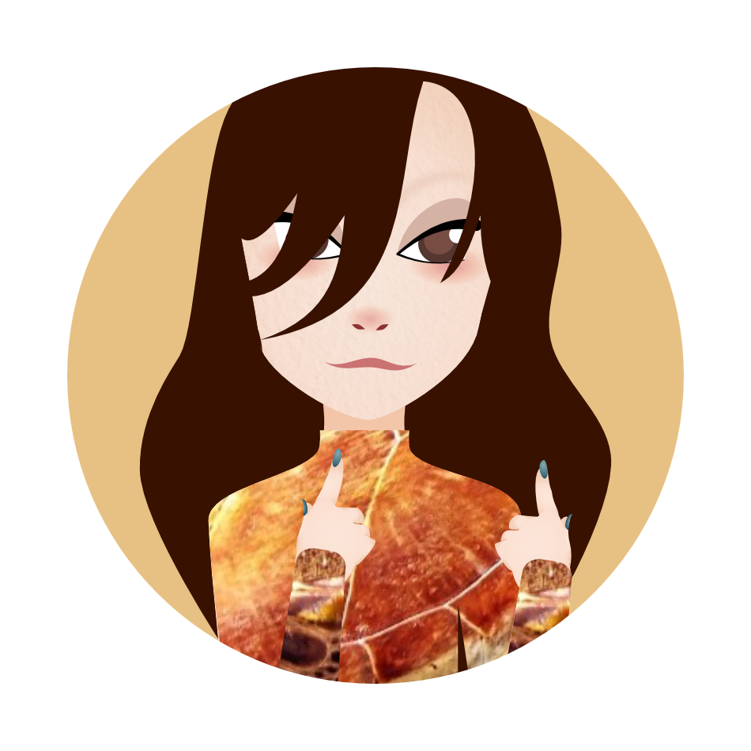
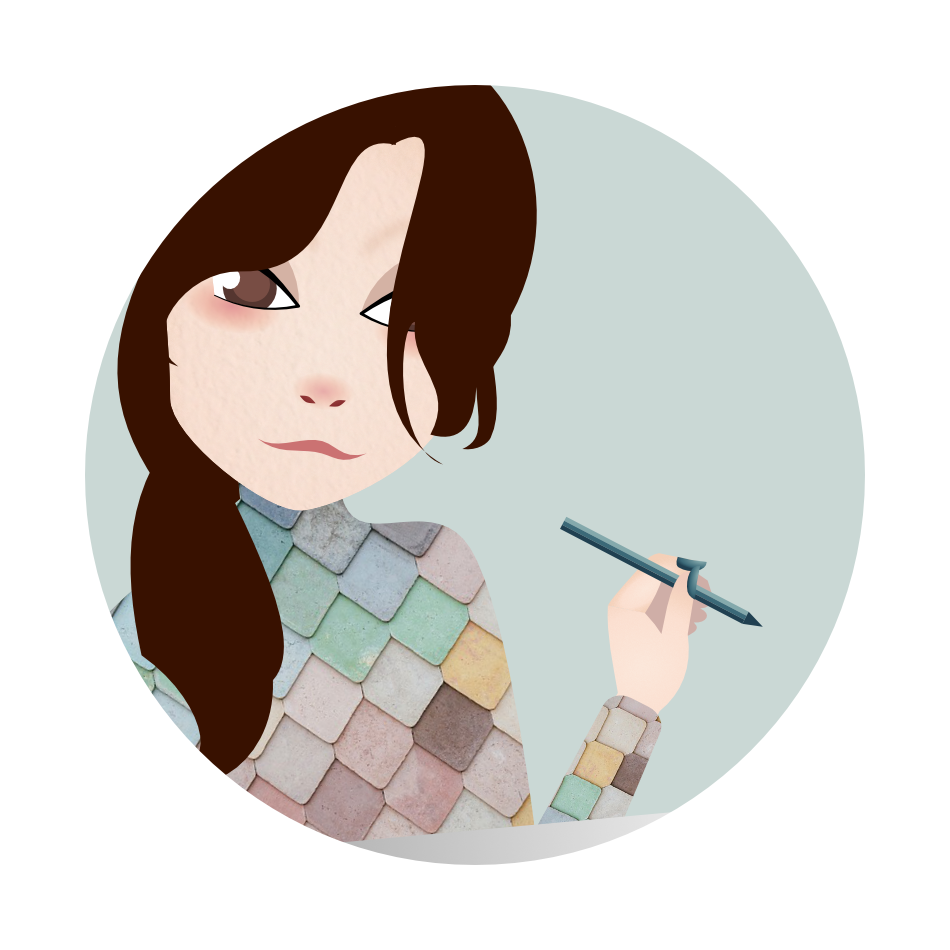

About Me




Interests
Active
- Accessibility (sociophysical)
- Game design and development
- Psycholinguistics
- Divergent psychology
- Perspectives
Inactive
- Dog care
- Fashion and garment construction
Passive
- Machine learning
Favorite Sources
Hobbies
Active
- World-building
- Constructing languages
- Reflective/Speculative writing
- Reading
- Product-Service design
Inactive
- Watch theatre and opera
- Long walks
- Visit galleries and museums
- Handsewing
- Learn German|French
Passive
- Practice Chinese
- Learn Spanish|Tagalog|Arabic
Skills
Hard skills
- Pair programming
Github - HTML
- CSS
- Javascript
- Node.js
- React
- Java
Soft skills
- Clear and direct communication
- Patience
- Resource tracking (helpful people or sources)
- Critical thinking
- Project planning professional
- Time management
- Teaching and training